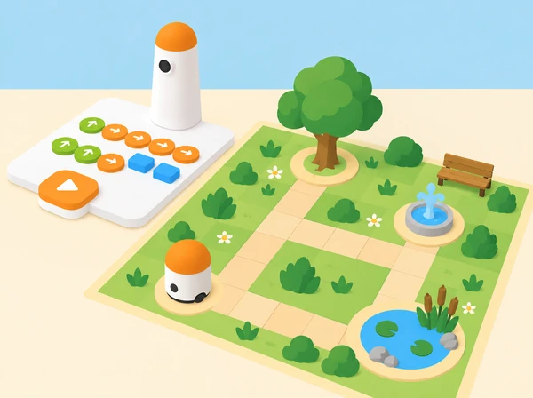

Com podem programar una ruta que visite diversos espais i ens ajude a observar-los sense tocar ni molestar els éssers vius?
Els equips dissenyen un mapa de parc inspirat en els espais verds i aiguamolls de la Comunitat Valenciana. MatataBot ix d’un punt d’inici, visita llocs triats pel grup —una zona d’ombra, una bassa de paper, un arbre o una font— i en cada parada deixa una targeta amb una pregunta observable. Es pot treballar amb un plànol de l’Albufera o amb un parc completament fictici; si s’observa un espai real, l’alumnat mira i registra sense arrancar plantes, tocar animals ni eixir dels recorreguts autoritzats.
Aprenentatges: llegir una graella, transformar un itinerari en ordres tangibles, anticipar la posició final, depurar una seqüència, comparar rutes i distingir observació directa d’inferència. El robot recorre el mapa; no és un sensor ambiental i no identifica plantes, espècies, qualitat d’aigua ni presència d’animals.
Prepareu el MatataBot i la torre de programació del Coding Set, un mapa original en quadrícula, blocs físics de moviment, targetes amb símbols per a les parades, fitxes d’observació i una figura lleugera per representar el «quadern de camp». Reviseu la càrrega i les instruccions del kit. Mesureu la quadrícula segons el moviment real del vostre robot: la informació del fabricant descriu moviments d’avanç de 10 cm i girs de 90°, però la distància efectiva s’ha de verificar amb el model, el terra i les peces disponibles al centre.
Fixeu el mapa sobre una superfície plana, poseu cada destí al centre d’una casella i manteniu les caselles i ordres visibles per a tot el grup. Comenceu amb un recorregut curt, sense obstacles estrets. Si la torre o el robot no està disponible, una fitxa sobre la mateixa graella i targetes de fletxa permeten fer el mateix treball de seqüenciació, però la prova física del robot quedarà pendent.
Vocabulari: mapa, casella, origen, destinació, avançar, retrocedir, girar, ordre, seqüència, observar, inferir i cuidar. Modeleu la diferència entre «veig ombra al costat de l’arbre» i «ací segurament fa més fresc» com a observació i hipòtesi.
Mostreu fotografies pròpies o autoritzades de l’Albufera, d’un parc de l’entorn o d’un mapa fictici. Cada equip tria tres espais que es puguen representar sense manipular éssers vius: ombra i sol, superfície pavimentada, aigua representada en paper, plantes dibuixades o un banc. Formuleu una pregunta que es puga respondre mirant, com «on arriba l’ombra?» o «quines formes de fulla veiem en la fotografia?» Eviteu preguntes que requerisquen tocar, capturar o identificar amb certesa una espècie.
Assigneu a cada parada un símbol i prepareu una fitxa amb camps «què veig», «què pense que podria significar» i «què no puc saber encara». Ordeneu les tres destinacions en un mapa i acordeu una norma de cura. Evidència: mapa inicial, tres símbols i una pregunta observable per parada. Preguntes docents: «Què podem saber només mirant? Quina part és una idea que encara hauríem de comprovar?»
Situeu MatataBot al punt d’inici de la quadrícula i identifiqueu la direcció cap on mira. Abans d’usar la torre, cada parella mou una fitxa casella a casella i registra les ordres físiques necessàries per arribar a la primera parada. Continueu fins a les altres dues, anotant els girs i les visites en l’ordre triat. Comproveu les distàncies en el mapa del centre i no pressuposeu que cada quadrícula ha de coincidir amb la longitud del moviment del robot.
Compareu dues rutes: una que visita totes les parades i una que n’omet una. Comenteu nombre d’ordres, claredat i si el trajecte passa per llocs estrets. Després, ordeneu els blocs de moviment corresponents i una targeta de parada entre trams perquè el relat siga llegible. Evidència: dues rutes representades, una seqüència de blocs i predicció de la casella final. Preguntes docents: «Quina ordre farà girar el robot? Si comença mirant cap a una altra banda, què haurem de canviar?»
Col·loqueu els blocs físics a la torre seguint la seqüència acordada. Una persona llig les ordres, una altra comprova que cada bloc està ben orientat i una tercera prediu la ruta. Executeu primer un trajecte fins a una sola parada. Si MatataBot acaba en una casella diferent, compareu pas a pas la seqüència esperada i la real: orientació inicial, recompte de moviments, gir i alineació amb la graella. Canvieu una sola instrucció abans de repetir.
Quan la primera part funciona, afegiu les altres destinacions i les targetes d’observació. Col·loqueu-les fora del camí perquè el robot no les desplace. En cada parada, l’equip tria la pregunta que investigaria i anota el símbol corresponent al quadern. Evidència: seqüència depurada, casella d’arribada real i registre d’un ajust justificat. Preguntes docents: «Quin és l’últim punt on el robot seguia el pla? Quina orde concreta revisarem?»
Executeu la ruta completa. En cada parada, un membre de l’equip llig la pregunta d’observació i un altre registra una dada del mapa, una fotografia o una observació real autoritzada. Si es treballa només amb maqueta, marqueu les dades com a simulades; no les presenteu com a observacions de camp. Cada equip tria una proposta de cura del parc que no requerisca instruccions de seguretat inventades, com mantindre’s en el camí autoritzat o no deixar residus.
Intercanvieu mapes entre equips: l’altre grup reconstrueix la ruta i identifica quines observacions són dades i quines són interpretacions. Reviseu el mapa si alguna parada no s’entén o si la seqüència queda confusa. Evidència: ruta final, tres fitxes d’observació i una proposta de cura sustentada en una observació. Preguntes docents: «Quina dada heu vist o consultat? Quina proposta necessita una font o una persona experta?»
Recolliu el mapa, la seqüència inicial i revisada, la predicció de la casella final i les fitxes d’observació. Observeu si l’alumnat:
Una seqüència més llarga no és necessàriament millor: es valora que siga provable, llegible i adequada al mapa. Si el robot falla per alineació, registreu la condició en lloc d’atribuir-ho automàticament a un error de raonament.
Useu fotografies o pictogrames per preparar l’observació, simplifiqueu el mapa i oferiu rols de cartografia, programació, lectura d’ordres, registre o relat. No és necessari eixir del centre si l’espai no és accessible; la ruta es pot fer completament sobre una maqueta. Feu caselles grans i d’alt contrast, i permeteu dictar o assenyalar les ordres. En qualsevol observació real, seguiu les indicacions del centre i de l’espai natural, manteniu-vos en recorreguts autoritzats i no toqueu animals ni plantes.
El treball amb destinacions, blocs de moviment, obstacles, memòria de les parades i relat propi s’inspira en l’activitat oficial Delivery Animals del Coding Set, que proposa transportar figures entre llocs comunitaris i explicar per què hi van. Aquesta adaptació canvia completament el mapa i la història: les parades són espais de natura pròxima i cada arribada activa una observació responsable, sense imitar ni reutilitzar les targetes oficials.